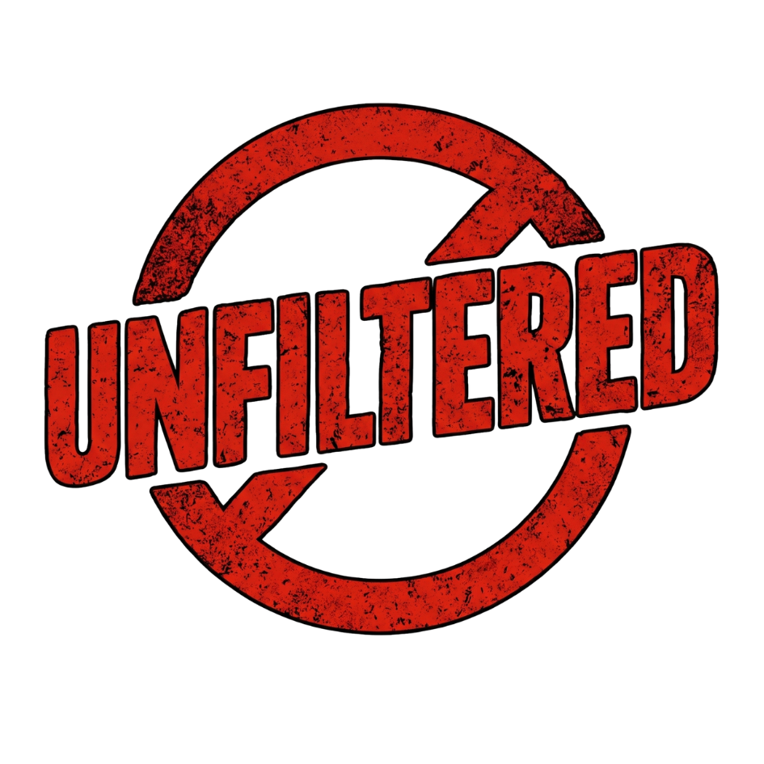
2026
Unfiltered
Unfiltered is a t-shirt brand built around politically incorrect, raw and uncensored statements and provocative designs. It's an experiment to set foot in a sector that is new to me: apparel. The brand is going well: I work with a t-shirt supplier I trust and have collaborated with for a while, with incredible prices and quality. I host it on Shopify and Etsy and run several social accounts under the brand. The goal is to scale it into a sizable, well-known brand, and then pour my focus into Unbothered.
Unfiltered è un brand di magliette con scritte politicamente scorrette, vere e senza censure, e design provocanti. È un esperimento per mettere piede in un settore nuovo per me: l'abbigliamento. Il brand sta procedendo bene: lavoro con un fornitore di magliette di cui mi fido e con cui collaboro da un po', con prezzi e qualità incredibili. Lo ospito su Shopify ed Etsy e gestisco vari profili social a nome del brand. L'obiettivo è scalarlo fino a renderlo un marchio grosso e riconosciuto, e poi concentrarmi parecchio su Unbothered.
Skills acquired:Conoscenze acquisite:
- Heat-press printing
- Stampa con pressa a caldo
- Graphic & apparel design
- Grafica e design per abbigliamento
- Vector file preparation
- Preparazione di file vettoriali
- Copyright & content policy management
- Gestione di copyright e policy sui contenuti
- E-commerce (Shopify & Etsy)
- E-commerce (Shopify ed Etsy)
- Brand & social media marketing
- Brand e social media marketing
- Stock & print production management
- Gestione di stock, stampe e produzione
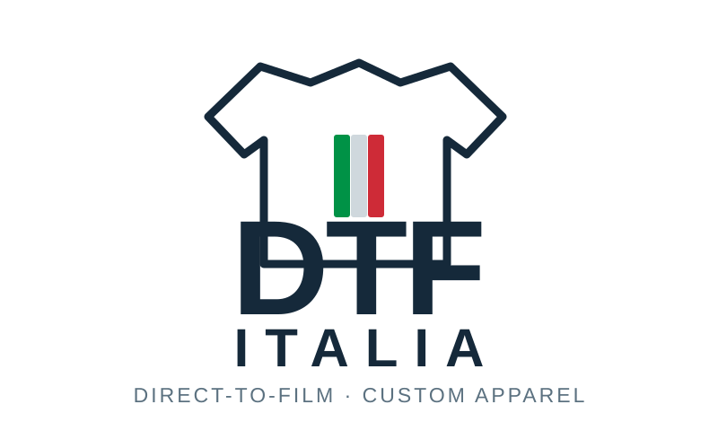
2026
DTF Italia
DTF Italia is a brand I want to launch to become a cheap, clean and high-quality supplier for businesses that need custom-logo t-shirts: shirts for sports, events, ceremonies, holidays, staff and much more. In my area I had a bad experience: I couldn't find anyone offering this affordably, with quality and simplicity. There was no well-made website, no online presence, everything chaotic and slow. My philosophy: if I had that problem, I'm probably not the only one. It shouldn't be that getting a decently priced t-shirt means waiting two weeks for it to ship from China. I want to be the change, and since I already run two brands (Unfiltered and Unbothered), this is the ideal moment.
DTF Italia è un brand che voglio aprire per essere un fornitore economico, pulito e di qualità per i business che vogliono magliette con il proprio logo: magliette per sport, eventi, cerimonie, festività, staff e molto altro. Nei dintorni mi sono trovato male: non ho trovato nessuno che offrisse queste cose in modo economico, qualitativo e semplice. Nessun sito fatto bene, nessuna presenza online, tutto molto caotico e lento. La mia filosofia: se quel problema l'ho avuto io, probabilmente non sono l'unico. Non è possibile che per avere una maglietta a prezzo decente debba arrivare dalla Cina in due settimane. Voglio essere il cambiamento, e dato che gestisco già due brand (Unfiltered e Unbothered), questo è il momento ideale.
Skills acquired:Conoscenze acquisite:
- DTF (Direct-to-Film) printing
- Stampa DTF (Direct-to-Film)
- B2B custom apparel supply
- Fornitura B2B di abbigliamento personalizzato
- E-commerce & online presence
- E-commerce e presenza online
- Pricing & supply-chain optimization
- Ottimizzazione di prezzi e filiera
- Brand identity & marketing
- Brand identity e marketing
- Customer & order management
- Gestione clienti e ordini
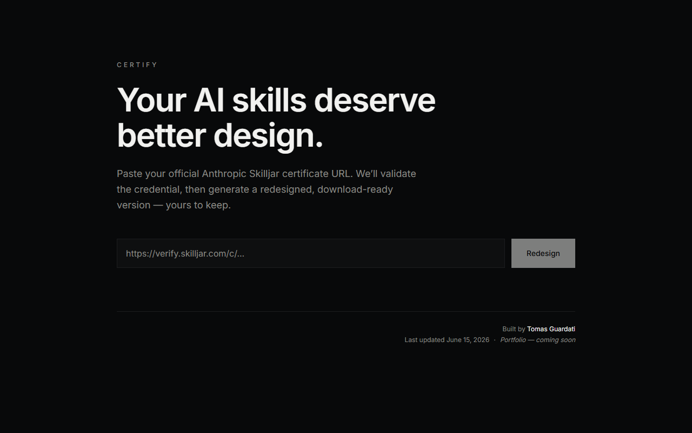
2026
Certify
Premium, verifiable course certificates regenerated from any Skilljar credential. A user pastes an official validation URL; Certify verifies it in real time, then regenerates a print-ready, dynamically themed PDF with a custom QR code, no database and zero forgery surface. Built end-to-end with Claude Code. Stack: Next.js (App Router), React, TypeScript, Tailwind CSS, Cheerio, html2canvas, jsPDF, Vercel.
Certificati di corso premium e verificabili, rigenerati a partire da qualsiasi credenziale Skilljar. L'utente incolla un URL di validazione ufficiale; Certify lo verifica in tempo reale e rigenera un PDF con tema dinamico, pronto per la stampa, con QR code personalizzato, senza database e senza superficie di contraffazione. Sviluppato interamente con Claude Code. Stack: Next.js (App Router), React, TypeScript, Tailwind CSS, Cheerio, html2canvas, jsPDF, Vercel.
Technical Highlights:Punti tecnici salienti:
- Credential validation in a server-side `/api/verify` route that is SSRF-safe, using Cheerio to scrape the live Skilljar DOM and bypass CORS to extract trusted metadata.
- SSRF-safe credential validation in a server-side /api/verify route, scraping the live Skilljar DOM with Cheerio to bypass CORS and extract trusted metadata.
- Defeated an html2canvas kerning conflict with Next.js-optimized fonts by injecting CDN fonts into the render clone before rasterization, for high-fidelity PDF export.
- Risolto un conflitto di kerning tra html2canvas e i font ottimizzati di Next.js iniettando i font CDN nel clone di rendering prima della rasterizzazione, per un export PDF ad alta fedeltà.
- Dynamic per-course theming for 18+ courses via CSS variables, plus local on-the-fly QR-code generation.
- Dynamic per-course theming for 18+ courses via CSS variables, plus local on-the-fly QR-code generation.
- Fully server-rendered and stateless on Vercel, with a strict dark-minimalist, high-contrast design system.
- Fully server-rendered and stateless on Vercel, with a strict dark-minimalist, high-contrast design system.
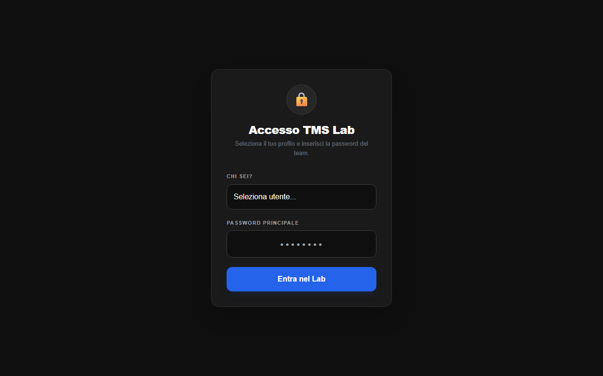
2025/2026
TMS LAB: Web Dashboard
A YouTube-style command center that turns raw video ideas into shipped productions. Team members sign in by profile, capture ideas, and drive each one through a six-stage production pipeline (script, audio, video, music, SFX, final cut) tracked by a weighted progress bar, alongside inspiration tooling, a live script analyzer, an editors' asset hub and a PIN-gated finance dashboard. Stack: Vanilla JS (ES Modules), Tailwind CSS (CDN), Chart.js, Google Apps Script + Drive backend, GitHub Pages.
Un centro di comando in stile YouTube che trasforma idee video grezze in produzioni finite. I membri del team accedono con il proprio profilo, raccolgono idee e le portano attraverso una pipeline di produzione a sei fasi (script, audio, video, musica, SFX, montaggio finale) tracciata da una barra di avanzamento pesata, con strumenti di ispirazione, un analizzatore di script in tempo reale, un hub asset per i montatori e una dashboard finanziaria protetta da PIN. Stack: Vanilla JS (ES Modules), Tailwind CSS (CDN), Chart.js, Google Apps Script + Drive backend, GitHub Pages.
Highlights:Punti salienti:
- Multi-stage idea-to-production pipeline with task-specific progress weighting, assignee claiming, and team performance analytics.
- Multi-stage idea-to-production pipeline with per-task progress weighting, assignee claiming and team performance analytics.
- Inspiration engine that fetches YouTube channel/video data through fallback CORS proxies and flags growing/stable/declining trends.
- Motore di ispirazione che recupera dati di canali e video YouTube tramite proxy CORS di fallback e segnala tendenze in crescita, stabili o in calo.
- Cloud sync to a user-configured Google Apps Script + Drive JSON backend, with live sync-status indicators and image compression.
- Sincronizzazione cloud su un backend JSON Google Apps Script + Drive configurabile dall'utente, con indicatori di stato di sincronizzazione in tempo reale e compressione delle immagini.
- PIN-protected finance dashboard (revenue, payouts, burn-rate) charted with Chart.js.
- Dashboard finanziaria protetta da PIN (entrate, pagamenti, burn-rate) visualizzata con Chart.js.
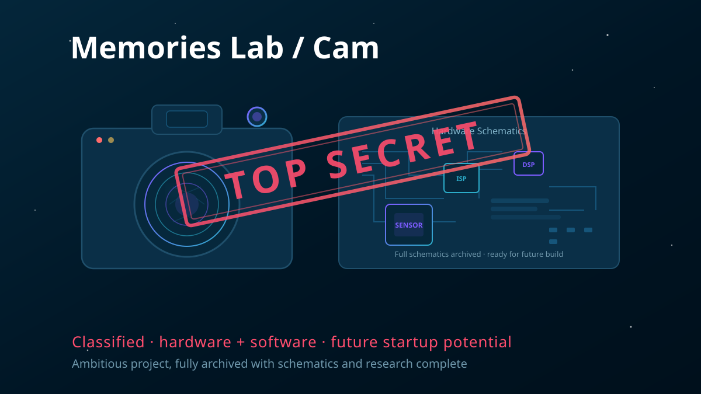
2026
Memories Lab / Cam
⚠️ TOP SECRET: current project details are classified. Memories Lab / Cam is an ambitious hardware and software project with future startup potential. It is currently not a priority, but it is fully archived: all schematics are designed and all research is complete, ready for future development when the time is right.
⚠️ TOP SECRET: i dettagli attuali del progetto sono classificati. Memories Lab / Cam è un progetto ambizioso che combina hardware e software, con potenziale di startup futuro. Al momento non è una priorità, ma è completamente archiviato: tutti gli schemi sono progettati e tutta la ricerca è completa, pronto per lo sviluppo futuro quando sarà il momento giusto.
Highlights:Punti salienti:
- Ambitious hardware + software system
- Sistema ambizioso hardware + software
- Future startup potential
- Potenziale di startup futuro
- Schematics designed, research complete
- Schemi progettati, ricerca completa
- Fully archived for future development
- Completamente archiviato per sviluppo futuro
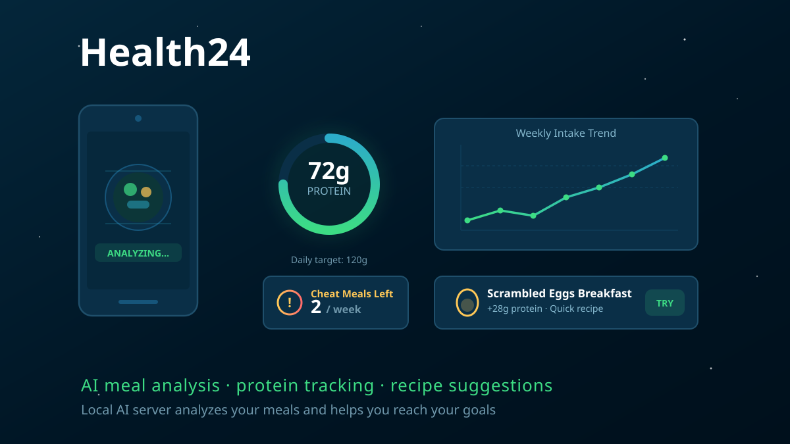
2026
Health24
An application leveraging a local home AI server to analyze meal photos sent from a smartphone. It estimates protein intake, generates trend charts, provides dietary improvement advice, calculates permissible deviations ("cheat meals"), and monitors fast-food consumption (e.g. kebab or McDonald's). Designed to help with overcoming underweight status through recipe suggestions (e.g. scrambled eggs breakfast) and an interactive feedback system that refines recommendations over time.
Un'applicazione che sfrutta un server AI locale domestico per analizzare le foto dei pasti inviate dallo smartphone. Stima l'apporto proteico, genera grafici di tendenza, fornisce consigli per migliorare la dieta, calcola le deviazioni consentite ("cheat meals") e monitora il consumo di fast food (es. kebab o McDonald's). Progettata per aiutare a superare il sottopeso attraverso suggerimenti di ricette (es. colazione con uova strapazzate) e un sistema di feedback interattivo che affina le raccomandazioni nel tempo.
Skills acquired:Conoscenze acquisite:
- Local AI inference for food recognition
- Inferenza AI locale per riconoscimento cibo
- Computer vision (meal photo analysis)
- Computer vision (analisi foto pasti)
- Nutritional data analysis & tracking
- Analisi e tracciamento dei dati nutrizionali
- Interactive feedback systems
- Sistemi di feedback interattivo
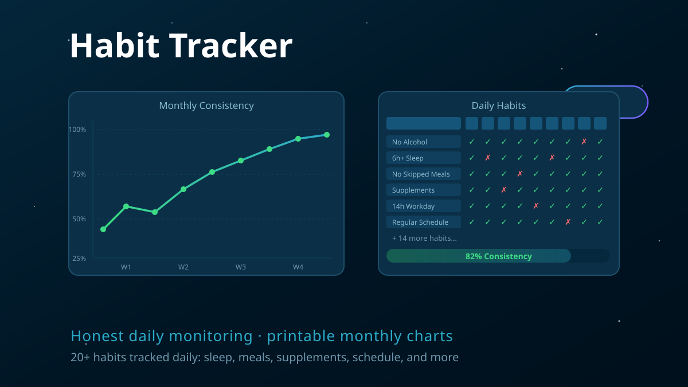
2026
Habit Tracker
A simple, non-AI application for honest daily habit monitoring. The user completes a daily form covering 20+ habits: no alcohol, 6+ hours of sleep, a regular schedule, a 14-hour workday, no skipped meals, taking supplements, and more. It generates a printable monthly Cartesian trend chart and a summary table illustrating consistency and performance across the entire month.
Un'applicazione semplice, senza AI, per il monitoraggio onesto delle abitudini quotidiane. L'utente compila un modulo giornaliero che copre oltre 20 abitudini: niente alcol, 6+ ore di sonno, orari regolari, giornata lavorativa di 14 ore, nessun pasto saltato, assunzione di integratori e altro ancora. Genera un grafico cartesiano mensile stampabile e una tabella riepilogativa che illustra la costanza e le performance nell'arco dell'intero mese.
Skills acquired:Conoscenze acquisite:
- Data visualization (Cartesian charts)
- Visualizzazione dati (grafici cartesiani)
- Print-ready layout generation
- Generazione di layout pronti per la stampa
- Daily form design & UX
- Design di moduli giornalieri e UX
- Habit analytics & trend tracking
- Analisi delle abitudini e tracciamento dei trend
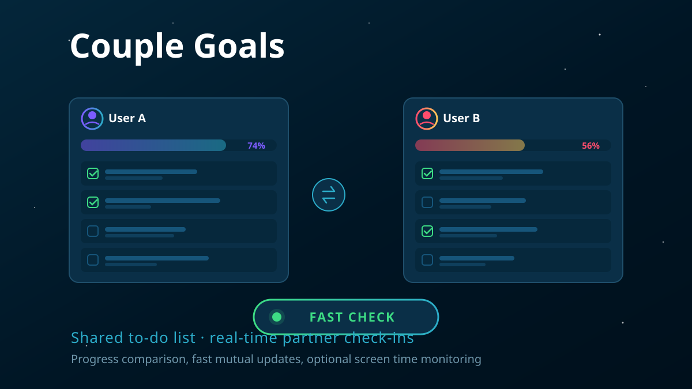
2026
Couple Goals
A shared to-do list application for partners. It centralizes task lists with real-time visibility of each person's progress, side-by-side comparison, and fast mutual "check-ins" similar to BeReal. Includes optional real-time screen time monitoring for mutual improvement as a pair.
Un'applicazione di to-do list condivisa per coppie. Centralizza le liste di attività con visibilità in tempo reale dei progressi di ciascuno, confronto affiancato e "check-in" reciproci rapidi simili a BeReal. Include il monitoraggio opzionale dello screen time in tempo reale per un miglioramento reciproco come coppia.
Skills acquired:Conoscenze acquisite:
- Real-time data synchronization
- Sincronizzazione dati in tempo reale
- Shared-state application design
- Design di applicazioni a stato condiviso
- Screen time monitoring integration
- Integrazione del monitoraggio dello screen time
- Relationship productivity UX
- UX per la produttività di coppia
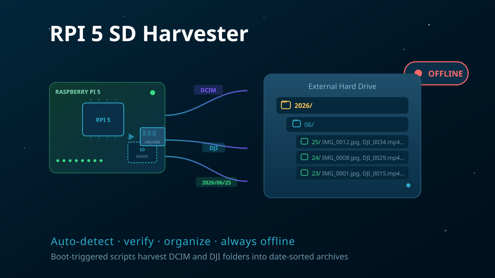
2026
RPI 5 SD Harvester
A Raspberry Pi 5 based, constantly offline data harvesting station connected to an external hard drive. On boot, it automatically runs scripts that detect inserted micro SD cards, verifies ownership (e.g. card name check) to confirm it belongs to the Harvester project, then transfers files from the DCIM and DJI folders directly to the hard drive, organizing them into subfolders by year, month, and day.
Una stazione di raccolta dati basata su Raspberry Pi 5, costantemente offline, collegata a un hard disk esterno. All'avvio, esegue automaticamente script che rilevano le micro SD inserite, verifica l'appartenenza (es. controllo del nome della scheda) per confermare che sia del progetto Harvester, e trasferisce i file dalle cartelle DCIM e DJI direttamente sull'hard disk, organizzandoli in sottocartelle per anno, mese e giorno.
Skills acquired:Conoscenze acquisite:
- Raspberry Pi 5 headless automation
- Automazione headless su Raspberry Pi 5
- Bash/Python boot scripting
- Scripting di avvio Bash/Python
- File system detection & verification
- Rilevamento e verifica del file system
- Automated media organization (date-based)
- Organizzazione automatica dei media (per data)
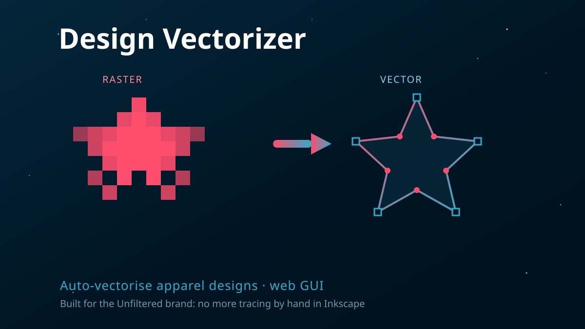
2026
Design Vectorizer
A tool for my Unfiltered brand. I kept finding myself vectorising dozens of designs by hand in Inkscape, and used to delegate it to my girlfriend. One day, watching me code and design my other vibe-coded projects (like Certify), she asked the obvious question, so I took her advice and started building this: a design vectorizer with a comfortable graphical interface, available online.
Uno strumento per il mio brand Unfiltered. Mi ritrovavo a dover vettorizzare a mano decine di design su Inkscape e lo delegavo alla mia ragazza. Un giorno, vedendomi programmare e fare il design di altri progetti vibecodati (come Certify), lei mi ha posto il quesito ovvio, così ho preso il suo consiglio e sto sviluppando questo: un vettorizzatore di design con un'interfaccia grafica comoda e disponibile online.
Skills acquired:Conoscenze acquisite:
- Raster-to-vector image tracing
- Tracciamento di immagini da raster a vettore
- Web-based GUI for design tooling
- GUI web per strumenti di design
- Apparel-ready vector file preparation
- Preparazione di file vettoriali pronti per l'abbigliamento
- Workflow automation for the Unfiltered brand
- Automazione del workflow per il brand Unfiltered
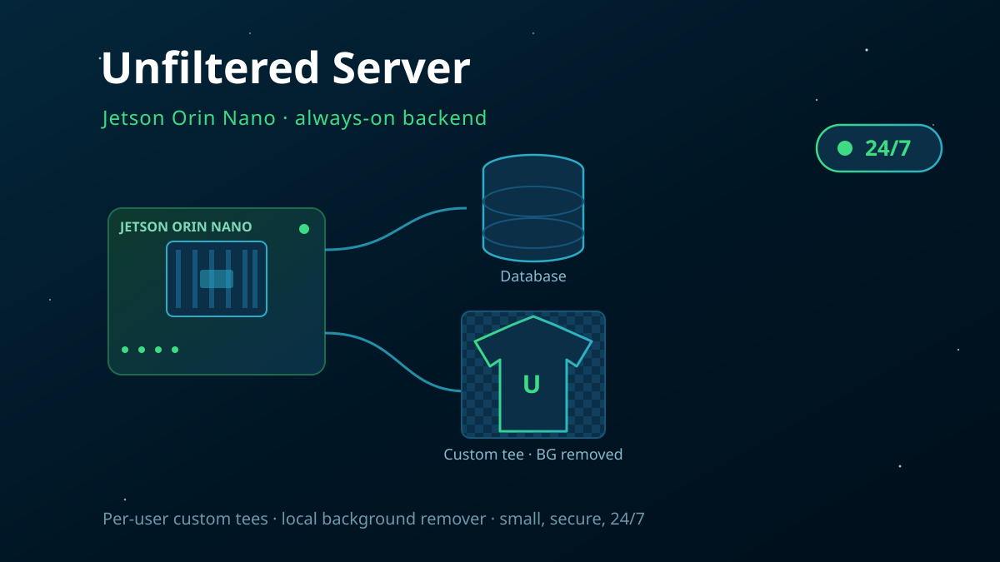
2026
Unfiltered Server (Jetson Orin Nano)
A small, always-on backend for the Unfiltered brand running on an NVIDIA Jetson Orin Nano: a database, per-user custom t-shirts and a local background-image remover, all handled on-device. It needs to be simple, something that stays powered 24/7 and does its few jobs reliably, but above all secure.
Un piccolo backend sempre acceso per il brand Unfiltered, su NVIDIA Jetson Orin Nano: un database, magliette custom per ogni utente e una rimozione dello sfondo in locale, gestiti tutti sul dispositivo. Deve essere semplice, qualcosa che resta acceso 24/7 e funziona bene per quel poco che deve fare, ma soprattutto sicuro.
Skills acquired:Conoscenze acquisite:
- Always-on (24/7) edge server on Jetson Orin Nano
- Server edge sempre acceso (24/7) su Jetson Orin Nano
- Database design & per-user data management
- Progettazione del database e gestione dati per utente
- Local background-image removal
- Rimozione dello sfondo in locale
- Server hardening & security
- Hardening e sicurezza del server
- Low-power, reliable headless operation
- Funzionamento headless affidabile e a basso consumo
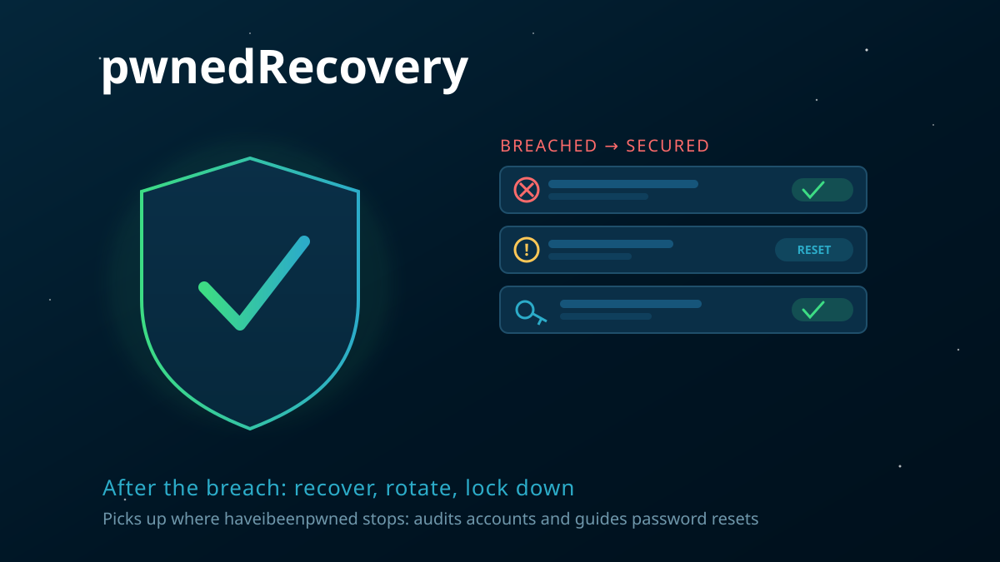
2026
pwnedRecovery
A tool that picks up where haveibeenpwned.com leaves off. Once you discover your email has been caught in data breaches, pwnedRecovery helps you identify the wider damage: it analyses your other emails and accounts, walks you through changing passwords, and builds a list of services you're still logged into, turning a scary breach notification into a concrete, step-by-step recovery plan.
Uno strumento che parte da dove finisce haveibeenpwned.com. Una volta scoperto che la tua mail è finita in dei data breach, pwnedRecovery ti aiuta a identificare i problemi più ampi: analizza le altre email e gli account, ti accompagna nel cambio delle password e costruisce una lista dei servizi a cui sei ancora loggato, trasformando una notifica di breach spaventosa in un piano di recupero concreto, passo dopo passo.
Skills acquired:Conoscenze acquisite:
- Data-breach analysis & account auditing
- Analisi dei data breach e audit degli account
- Credential hygiene & guided password rotation
- Igiene delle credenziali e cambio password guidato
- Logged-in service discovery & mapping
- Individuazione e mappatura dei servizi loggati
- Security & privacy UX
- UX per sicurezza e privacy
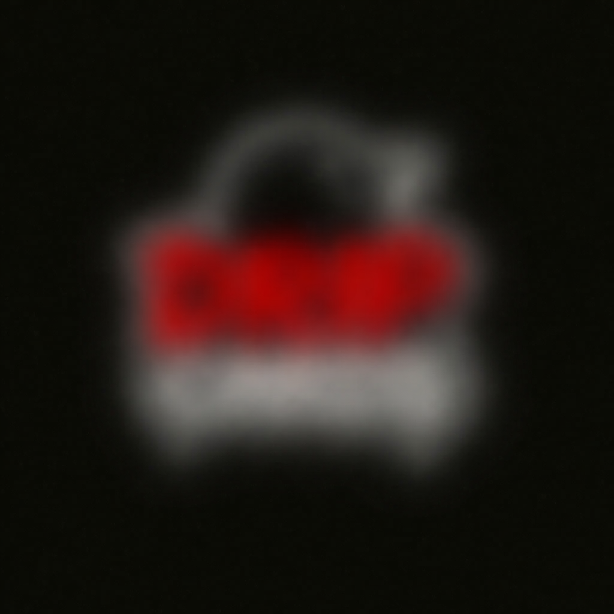
2025/2026
DRPCRDS
This secret brand was initially conceived as a creative experiment and has experienced rapid growth during its maturity period. Over time, I realized the limitations and risks associated with its birth, due to its sudden growth and the need to focus on orders, website, and product rather than the research phase. Today, I am restructuring the project with a more solid and targeted business model. It remains an extremely formative experience, with concrete results that have strengthened my vision for the future.
Questo brand segreto è nato inizialmente come un esperimento creativo e ha registrato una crescita molto rapida durante il periodo della maturità. Con il tempo mi sono reso conto dei limiti e dei rischi legati alla sua nascita, dovuti alla crescita improvvisa e alla necessità di concentrarmi su ordini, sito e prodotto più che sulla fase di ricerca. Oggi sto ristrutturando il progetto con un business model più solido e mirato. Rimane comunque un'esperienza estremamente formativa, con risultati concreti che hanno rafforzato la mia visione per il futuro.
Skills acquired:Conoscenze acquisite:
- Brand building from scratch, marketing and creative direction.
- Costruzione di un brand da zero, marketing e direzione creativa.
- Graphic design for physical products, brand visual identity and packaging design.
- Graphic design per prodotti fisici, identità visiva del brand e packaging design.
- E-commerce management, product listing optimization, pricing strategy and customer funnel design.
- Gestione e-commerce, ottimizzazione delle schede prodotto, strategia di prezzo e progettazione del funnel clienti.
- Order fulfillment management, packaging & protection standards and returns & dispute handling.
- Gestione dell'evasione ordini, standard di packaging e protezione, gestione di resi e controversie.
- Copyright & fair use awareness, risk management and business model evaluation.
- Consapevolezza su copyright e fair use, gestione del rischio e valutazione del business model.
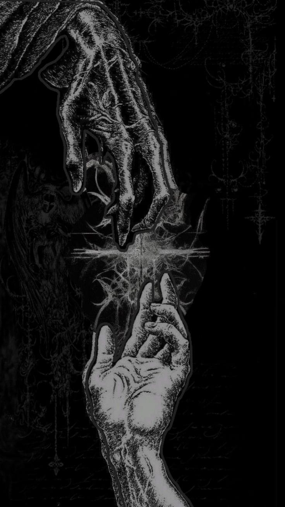
2026
Anomaly / Unbothered Brand
In the time I often found myself appreciating a very particular aesthetic style, especially when worn by people with athletic, lean bodies or sports bikers. It's a style in which I recognize myself very much. My girlfriend, some time ago, showed me as well some tattoos related to this aesthetics and, for fun, she had fake ones made on my neck and hands. On several occasions and events many people have asked me if they were real and, in case, where they could get them done. This experience made me reflect and inspired me to develop a new brand in Italy: a project that combines this aesthetics with original designs, bringing my ideas even to unconventional supports, such as custom motorcycle fairings.
Nel tempo mi sono spesso ritrovato ad apprezzare uno stile estetico molto particolare, soprattutto quando indossato da persone con fisici atletici, lean o da biker sportivi. È uno stile in cui mi riconosco molto. La mia ragazza, tempo fa, mi ha mostrato anche alcuni tatuaggi riconducibili a questa estetica e, per gioco, me ne ha realizzati di finti su collo e mani. In diverse occasioni ed eventi molte persone mi hanno chiesto se fossero reali e, nel caso, dove potessero farseli. Questo riscontro mi ha fatto riflettere e mi ha ispirato a sviluppare un nuovo brand in Italia: un progetto che unisca questa estetica a design originali, portando le mie idee anche su supporti non convenzionali, come le carene custom di moto sportive.
Target Niches:Nicchie Mirate:
- Dark / underground streetwear
- Streetwear dark / underground
- Tattoo culture
- Tattoo culture
- Gym / fitness aesthetic
- Gym / Fitness aesthetic
- Sports bikers & custom motorcycle fairings
- Biker sportivi & carene moto custom
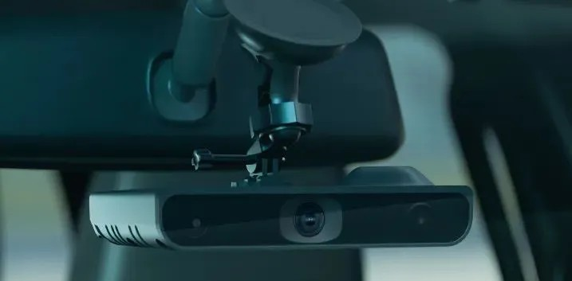
2026/2027
Custom DePIN Dashcam
The dashcam project draws inspiration from Hivemapper. Since I discovered the DePIN projects, like decentralized antenna networks, this approach has always fascinated me. I was looking for a continuous and scalable system, and by analyzing the main competitors in the sector, Hivemapper stood out as one of the most evident references. At the same time, I identified several structural limitations in their current model: issues that I believe can be addressed and improved through an alternative system that I have developed. The goal is to contribute to a real decentralization of services currently dominated by centralized platforms like Google Maps, shifting more value and control to users. The theory and conceptual architecture are already defined; the complex part remains: practical implementation and entering a highly competitive sector. The idea is to structure the project progressively, with the objective of launching a startup by the end of 2026.
Il progetto della dashcam prende ispirazione da Hivemapper. Fin da quando ho scoperto i progetti DePIN, come le reti di antenne decentralizzate, questo tipo di approccio mi ha sempre affascinato. Cercavo un sistema continuativo e scalabile e, analizzando i principali competitor del settore, Hivemapper è stato uno dei riferimenti più evidenti. Allo stesso tempo, ho individuato diversi limiti strutturali nel loro modello attuale: criticità che ritengo possano essere affrontate e migliorate attraverso un sistema alternativo da me elaborato. L'obiettivo è contribuire a una reale decentralizzazione di servizi oggi dominati da piattaforme centralizzate come Google Maps, spostando il valore e il controllo maggiormente a favore degli utenti. La teoria e l'architettura concettuale sono già definite; resta la parte più complessa: l'implementazione pratica e l'ingresso in un settore altamente competitivo. L'idea è quella di strutturare il progetto in modo progressivo, con l'obiettivo di avviare una startup entro la fine del 2026.
Skills acquired:Conoscenze acquisite:
- Too many. Probably this project will be the cornerstone of my career, so in the future I will dedicate a proper section worthy of note to it.
- Troppe. Probabilmente questo progetto sarà cardine della mia carriera, quindi in futuro gli dedicherò una sezione apposita degna di nota.
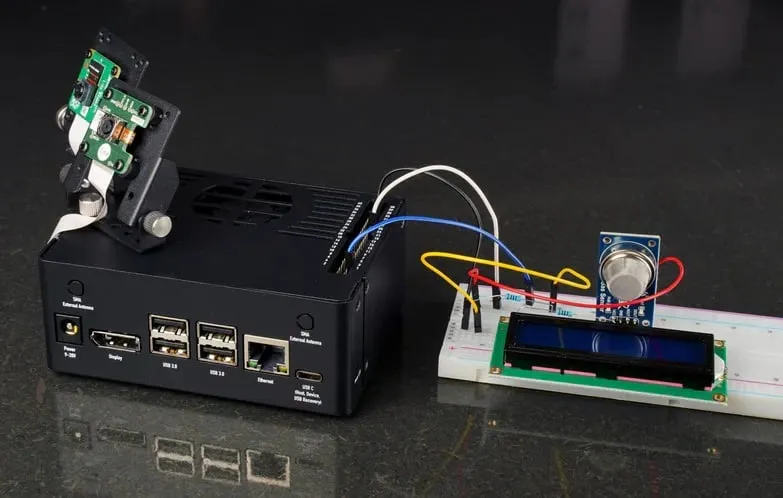
2026
AI Depin Node JETSON ORIN NANO SUPER (67 TOPS)
A DePIN node built on the NVIDIA Jetson Orin Nano Super (67 TOPS), dedicated to edge AI inference: a small, low-power server that contributes compute to decentralized networks, earning rewards while running AI models locally.
Un nodo DePIN basato su NVIDIA Jetson Orin Nano Super (67 TOPS), dedicato all'inferenza AI in edge: un piccolo server a basso consumo che mette a disposizione potenza di calcolo per reti decentralizzate, generando ricompense mentre fa girare modelli AI in locale.
Skills acquired:Conoscenze acquisite:
- Edge AI deployment on Jetson Orin Nano (67 TOPS)
- Deployment di edge AI su Jetson Orin Nano (67 TOPS)
- DePIN node setup & rewards
- Setup di un nodo DePIN e ricompense
- Local LLM / model inference optimization
- Ottimizzazione dell'inferenza di LLM / modelli in locale
- CUDA / TensorRT acceleration
- Accelerazione CUDA / TensorRT
- Headless server configuration & remote management
- Configurazione server headless e gestione da remoto
- Power & thermal optimization
- Ottimizzazione di consumi e dissipazione
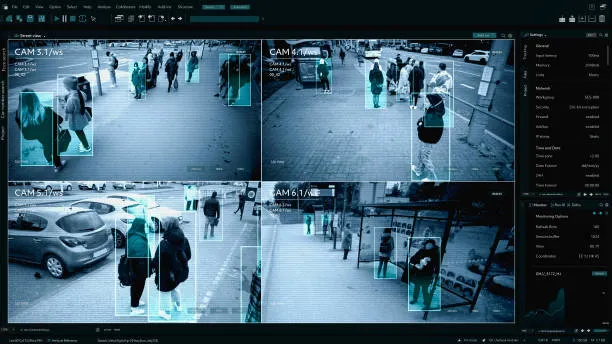
2026
Advanced AI Local Surveilance System
The goal is a fully autonomous surveillance system, completely detached from any physical network: cameras and drones connected over Wi-Fi to a Starlink uplink, powered by UPS units and batteries, with a local AI server that captures and analyzes everything in real time, recognizing faces and detecting events and anomalies as they happen. Automated drones with recharge docking stations act as patrols. I plan to integrate this system in the future, when I take over my father's company.
L'obiettivo è un sistema di sorveglianza del tutto autonomo e scollegato da qualsiasi rete fisica: telecamere e droni collegati via Wi-Fi a una connessione Starlink, alimentati da UPS e batterie, con un server AI locale che capta e analizza tutto in tempo reale, riconoscendo volti e rilevando eventi e anomalie nel momento in cui accadono. Droni automatizzati con stazioni di ricarica fanno da pattuglia. Integrerò questo sistema in futuro, quando rileverò l'azienda di mio padre.
Skills acquired:Conoscenze acquisite:
- Real-time edge AI inference
- Inferenza AI in edge in tempo reale
- Computer vision & facial recognition
- Computer vision e riconoscimento volti
- Event & anomaly detection
- Rilevamento di eventi e anomalie
- Autonomous patrol drones & recharge docking
- Droni di pattuglia autonomi e docking di ricarica
- Off-grid networking via Starlink
- Rete off-grid via Starlink
- Power management (UPS & batteries)
- Gestione energia (UPS e batterie)
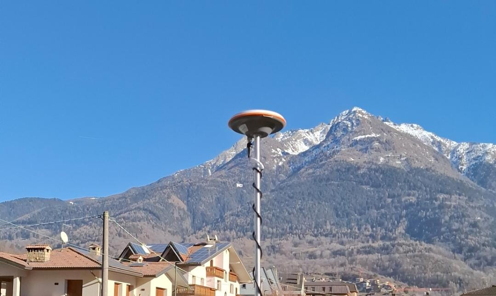
2025
Geodnet RTK/GNSS Data Mapping
During my fifth and final year of high school, right after getting my driver's license, I travelled all over Italy to install antennas on the RTK project's super-sites. They were multi-day trips, organized by me and often improvised at the last minute: a mission against the clock and against the other participants in the project. I had to open up to people and make hundreds of phone calls, but I had a clear goal: all I needed was a "yes" to install the antenna, drive home and earn a passive income that was huge for my age, a help for future projects and a safety net. I also presented my final high-school capstone ("capolavoro della maturità") with this project: at least my teachers finally understood why, during the math exam, I had left at 3 a.m. and spent the morning on top of a mountain refuge at 3000 m of altitude, under a meter of snow, talking to the locals to place an antenna. Probably one of the most beautiful periods and projects of my life.
Durante il quinto anno di superiori, appena presa la patente, ho viaggiato per tutta l'Italia per posizionare antenne nei super-siti del progetto RTK. Erano viaggi di più giorni, organizzati da me e spesso improvvisati all'ultimo: una missione contro il tempo e contro gli altri partecipanti del progetto. Dovevo aprirmi con le persone e fare centinaia di chiamate, ma avevo un obiettivo chiaro: mi bastava un sì per installare l'antenna, tornare a casa e avere un guadagno passivo ingente per la mia età, un aiuto per i progetti futuri e un paracadute. Con questo progetto ho anche presentato il capolavoro della maturità: almeno i miei professori hanno finalmente capito perché, mentre c'era la verifica di matematica, io ero partito alle 3 di notte ed ero per la mattinata sopra un rifugio a 3000 metri di altitudine, con un metro di neve, a parlare con i locali per posizionare un'antenna. Probabilmente uno dei periodi e dei progetti più belli della mia vita.
Skills acquired:Conoscenze acquisite:
- Technical knowledge
- Conoscenze tecniche
- Troubleshooting
- Troubleshooting
- Data management
- Gestione dei dati
- Community management
- Community management
- Server performance optimization
- Ottimizzazione delle performance del server
- Cross-platform integration
- Integrazione cross-platform
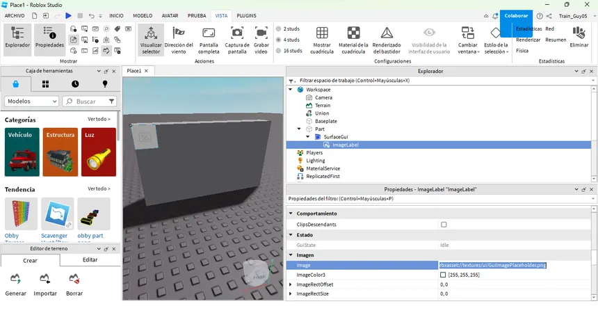
2026
LolloLacustre: The Game
The idea for this game originated initially after watching Favij's video on Favij The Game. It was a strong source of inspiration, also because recently I often follow Lollo: his content keeps me company while I work and stays often in the background. Over time, I have listened to many of his opinions, and following him for quite some time, it always seemed to me like a genuine person with perspectives where I often find myself. Initially, I thought of developing a game for him in Unity, but subsequently I evaluated that a more intelligent and strategic choice could be to realize it within Roblox, maintaining however a high level of care and elaboration. Indeed, recently, I have noticed how various games developed on Roblox in that style No, I'm Not a Human, which I found particularly interesting to observe, are receiving much attention and relevant results.
L'idea di questo gioco nasce inizialmente dopo aver visto il video di Favij su Favij The Game. È stata una forte fonte di ispirazione, anche perché ultimamente seguo spesso Lollo: i suoi contenuti mi tengono compagnia mentre lavoro e restano spesso in sottofondo. Col tempo ho ascoltato molte sue opinioni e, seguendolo da parecchio, mi è sempre sembrato una persona genuina e con punti di vista in cui spesso mi ritrovo. Inizialmente avevo pensato di sviluppare un gioco per lui in Unity, ma successivamente ho valutato che una scelta più intelligente e strategica potesse essere realizzarlo all'interno di Roblox, mantenendo però un livello di cura ed elaborazione elevato. Negli ultimi tempi, infatti, ho notato come diversi giochi sviluppati su Roblox in quello stile No, I'm Not a Human, che ho trovato particolarmente interessante da osservare, stiano ottenendo molta attenzione e risultati rilevanti.
Skills acquired:Conoscenze acquisite:
- Roblox Studio development
- Sviluppo con Roblox Studio
- LUA (coding language)
- LUA (linguaggio di programmazione)
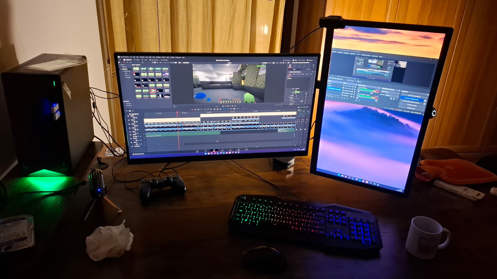
2025/2026
TMS LAB (Youtube)
After moving alone during the summer, I decided to dedicate an entire room to my study. It's a space that I want to use to cultivate my passions and dreams even more seriously, just as I did when I was a child, such as creating content on YouTube related to what truly interests me. Looking to the future, my goal is to gradually transfer my activities within my father's company. I would like to be able to contribute concretely to its revitalization: by taking over, stabilizing the economic situation, and reorganizing the company into something solid and sustainable. I hope to be that person and, above all, to succeed in making him proud.
Dopo essermi trasferito durante l'estate a vivere da solo, ho deciso di dedicare una stanza interamente allo studio. È uno spazio che voglio usare per coltivare in modo ancora più serio le mie passioni e i sogni che porto con me fin da bambino, come la creazione di contenuti su YouTube legati a ciò che mi interessa davvero. Guardando al futuro, il mio obiettivo è trasferire gradualmente la mia attività all'interno dell'azienda di mio padre. Vorrei poter contribuire concretamente al suo rilancio: subentrando, sistemando la situazione economica e rimodellando l'azienda in qualcosa di solido e sostenibile. Spero di essere io quella persona e, soprattutto, di riuscire a renderlo fiero.
Client Requirements:Requisiti del cliente:
- Content creation
- Creazione di contenuti
- Video editing and visual storytelling
- Video editing e visual storytelling
- Trend analysis (YouTube / Gaming)
- Analisi dei trend (YouTube / Gaming)
- Personal branding
- Personal branding
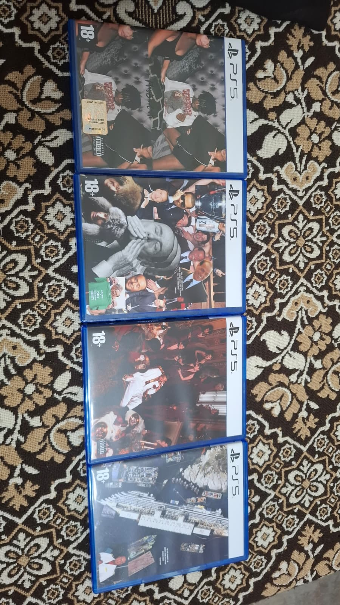
2025
PS5 Custom Game Covers
I experimented with Canva, taking inspiration from a custom game dedicated to Chief Keef that I saw on Pinterest. From there, I designed several personalized covers, curating the front, back, and side text. On the back, I inserted descriptive texts that tell the character being represented, their story, and the narrative context. I would like to specify that no copies were sold.
Ho sperimentato con Canva, prendendo ispirazione da un gioco custom dedicato a Chief Keef visto su Pinterest. Da lì ho progettato diverse copertine personalizzate, curando fronte, retro e scritte laterali. Sul retro ho inserito testi descrittivi che raccontano il personaggio rappresentato, la sua storia e il contesto narrativo. Vorrei specificare che nessuna copia è stata venduta.
Skills acquired:Conoscenze acquisite:
- Basic graphic design
- Grafica di base
- Copyright laws
- Leggi sul copyright
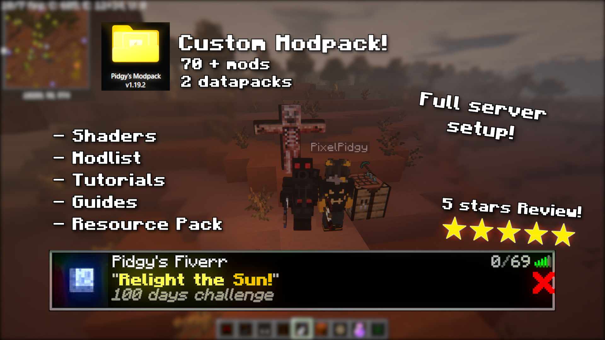
2023
Pidgy's Custom Server
Pidgy's Custom Server
This modified server began as a "100-day challenge" set in a zombie apocalypse horror scenario, featuring scattered bunkers and procedurally generated themed structures.
Questo server modificato è nato come una "sfida dei 100 giorni" ambientata in uno scenario horror di apocalisse zombie, con bunker sparsi per la mappa e strutture tematiche generate proceduralmente.
Client Requirements:Requisiti del cliente:
- Custom modpack development for server theme.
- Sviluppo di un modpack personalizzato per il tema del server.
- Implement bunkers and themed structures based on a procedural generation scheme.
- Implementare bunker e strutture tematiche basate su uno schema di generazione procedurale.
- Integrate zombie survival mechanics.
- Integrare meccaniche di sopravvivenza zombie.
- Server hosting setup with strong performance.
- Setup of server hosting with robust performance.
- Player permissions setup and security measures.
- Configurazione dei permessi giocatori e misure di sicurezza.
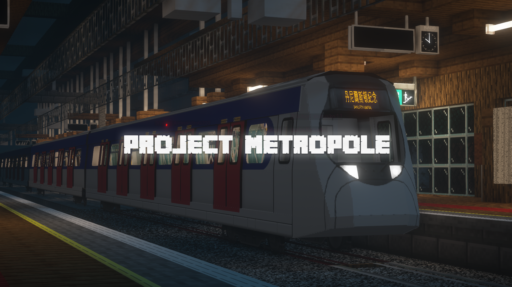
2023
lapierre1 Custom Server
lapierre1 Custom Server
This project aims to create a realistic world featuring numerous cities, both large and small towns, realistic public transport systems, highways, and a comprehensive campaign.
Questo progetto punta a creare un mondo realistico con numerose città grandi e piccole, sistemi di trasporto pubblico realistici, autostrade e una campagna completa.
Client Requirements:Requisiti del cliente:
- Creation of a custom modpack
- Creazione di un modpack personalizzato
- Server hosting setup
- Setup of server hosting
- Configuration of player permissions
- Configurazione dei permessi giocatori
- Integration of custom maps
- Integrazione di mappe personalizzate
- Implementation of server chunk loader
- Implementation of server chunk loader
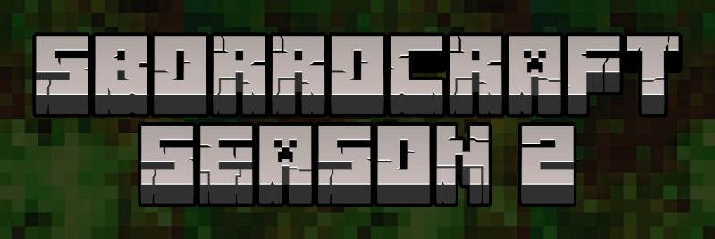
2022/2023
SborroCraft
SborroCraft is a project born as a small Minecraft server among friends, designed to unite those playing on PlayStation (Bedrock) with those on PC (Java), as well as those playing on mobile devices and other platforms. It was set up in less than three days, along with a dedicated Discord server to manage the community. Over time, it became my country's Minecraft server, attracting over 60 players, with a peak of 20 players simultaneously.
SborroCraft è un progetto nato come un piccolo server Minecraft tra amici, concepito per unire coloro che giocavano su PlayStation (Bedrock) a quelli su PC (Java), così come a coloro che giocavano su dispositivi mobili e altre piattaforme. È stato messo su in meno di tre giorni, insieme a un server Discord dedicato per gestire la community. Nel tempo, è diventato il server Minecraft del mio paese, attirando oltre 60 giocatori, con un picco di 20 giocatori contemporaneamente.
Skills acquired:Conoscenze acquisite:
- Technical knowledge
- Conoscenze tecniche
- Troubleshooting
- Troubleshooting
- Data management
- Gestione dei dati
- Community management
- Community management
- Server performance optimization
- Ottimizzazione delle performance del server
- Cross-platform integration
- Integrazione cross-platform
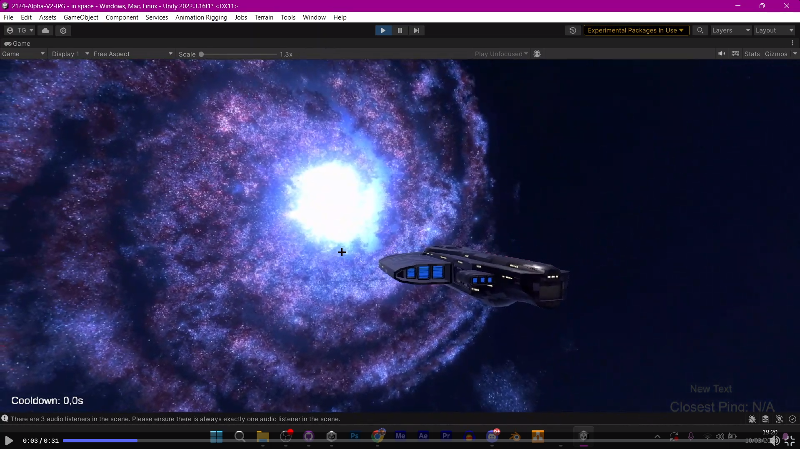
2024
2124 (Unity)
This project originated from a contest at the University of Camerino called "Computer Science for Games". This contest required forming a team to develop a video game using the Unity graphics engine.
Questo progetto ha avuto origine da un concorso presso l'Università di Camerino chiamato "Informatica per Gioco". Questo concorso richiedeva la formazione di un team per lo sviluppo di un videogioco utilizzando il motore grafico Unity.
Skills acquired:Conoscenze acquisite:
- Programming (C#)
- Programmazione (C#)
- 3D modeling and animation (Blender)
- Modellazione 3D e animazione (Blender)
- Team leading
- Team leading
- Creativity and storytelling
- Creatività e storytelling
- Cutscene production
- Produzione di cutscene
- Asset research
- Ricerca di asset
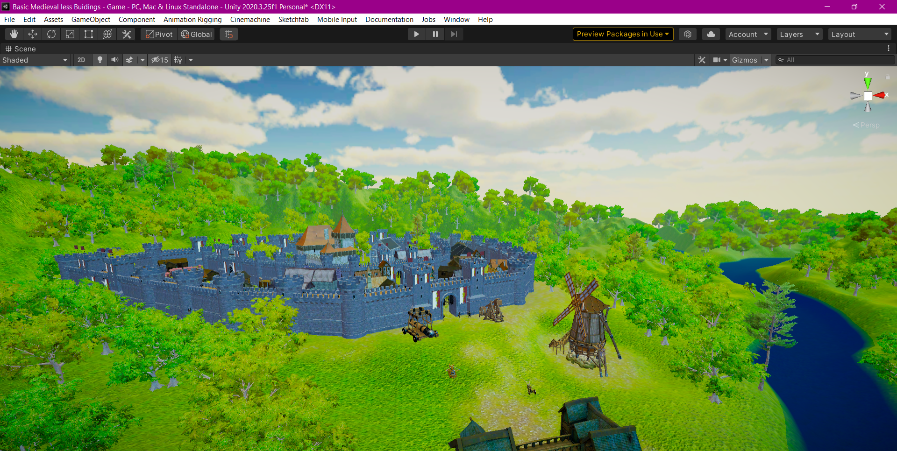
2023
Medieval Game (Unity)
Gioco Medievale (Unity)
This project originated during my third year of high school as a group history assignment. Instead of creating a simple PowerPoint, I decided to add more to our team by creating an interactive experience in a medieval city in 3D. It was my first complete game realized on Unity.
Questo progetto ha avuto origine durante il mio terzo anno di liceo come compito di gruppo di storia. Invece di creare un semplice PowerPoint, ho deciso di dare un tocco in più al nostro team creando un'esperienza interattiva in una città medievale in 3D. È stato il mio primo gioco "completo" realizzato su Unity.
Skills acquired:Conoscenze acquisite:
- Unity proficiency
- Competenza in Unity
- Level design
- Level design
- Problem-solving skills
- Capacità di problem solving
- Player feedback incorporation
- Integrazione del feedback dei giocatori
- Player camera color grading
- Color grading della camera del giocatore

2024/2025
MDC (Unity)
MCD is a multiplayer game under development, where the objective is to survive attacks from a hungry monster.
MCD è un gioco multiplayer in sviluppo, dove l'obiettivo è sopravvivere agli attacchi di un mostro affamato.
Mission 1: Cappelletti ZoneMissione 1: Zona Cappelletti
A monster has eaten all the ravioli doughs. Gather chocolate, flour, eggs, sugar, butter, and milk scattered across the map. Repair the oven and the pasta maker, turn on the power, and resolve small knots to cook enough ravioli to feed the monster. Attention: The monster is aggressive and becomes more dangerous over time. Collaboration is crucial for survival.
Un mostro ha mangiato tutte le paste di cappelletti. Raccogli cioccolata, farina, uova, zucchero, burro e latte sparsi per la mappa. Ripara il forno e l'impastatrice, riattiva la corrente e risolvi piccoli intrighi per cucinare abbastanza cappelletti e sfamare il mostro. Attenzione: il mostro è aggressivo e diventa più pericoloso con il tempo. La collaborazione è cruciale per sopravvivere.
Skills acquired:Conoscenze acquisite:
- Multiplayer integration
- Integrazione multiplayer
- Environmental interaction design
- Design delle interazioni ambientali
- Quality assurance (QA) testing
- Quality assurance (QA) testing
- Game mechanics design
- Design delle meccaniche di gioco
- Performance optimization
- Ottimizzazione delle performance
- User interface (UI) and experience (UX) design
- Design di interfaccia (UI) ed esperienza utente (UX)
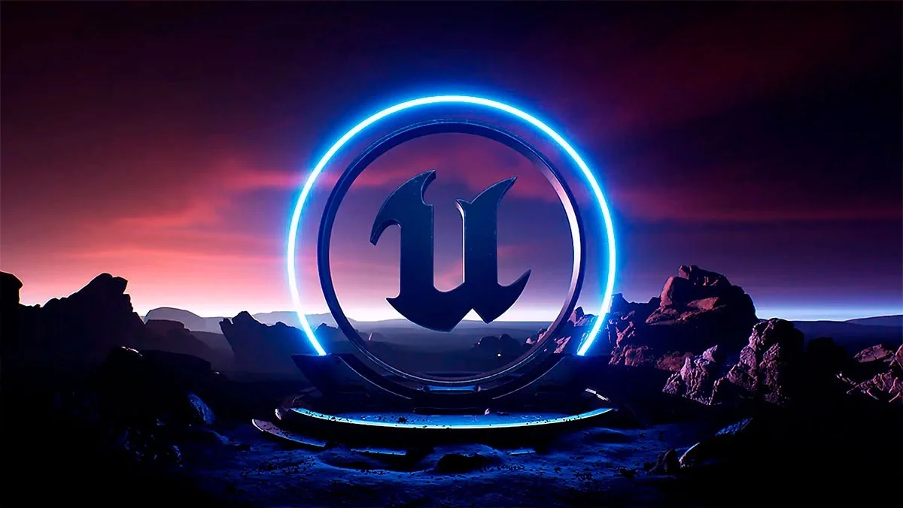
2024
2124 (Unreal Engine 5.4)
2124 on Unreal Engine 5.4 is the advanced and still under development version of the original game created for the University of Camerino (UNICAM) using Unity. This ambitious project aims to leverage the advanced graphical and technical capabilities of Unreal Engine 5.4 to offer an even more engaging and refined gaming experience. Currently in development, the goal is to complete a definitive version by the end of 2024, with a subsequent official release of the game.
2124 su Unreal Engine 5.4 è la versione evoluta e ancora in sviluppo del gioco originale creato per l'Università di Camerino (UNICAM) utilizzando Unity. Questo progetto ambizioso mira a sfruttare le avanzate capacità grafiche e tecniche di Unreal Engine 5.4 per offrire un'esperienza di gioco ancora più coinvolgente e raffinata. Attualmente in fase di sviluppo, l'obiettivo è completare una versione definitiva entro la fine del 2024, con una successiva pubblicazione ufficiale del gioco.
Skills acquired:Conoscenze acquisite:
- C++ programming
- Programmazione C++
- Multiplayer implementation
- Implementazione multiplayer
- Blueprint scripting
- Blueprint scripting
- Advanced rendering techniques (Lumen, Nanite)
- Tecniche di rendering avanzato (Lumen, Nanite)
- Marketing strategies
- Strategie di marketing
- Client-server synchronization
- Client-Server Synchronization
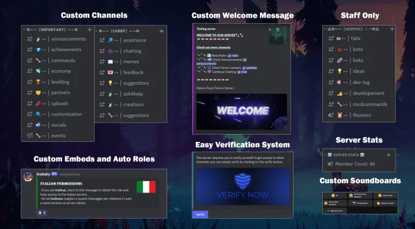
2021-2026
Discord Community Hubs
The Discord server for Project 2124 and SborroCraft are central hubs for their respective communities, offering spaces where members can communicate, collaborate, and share resources. Both servers are designed to be highly efficient and user-friendly thanks to the implementation of various automated bots and integration of diverse features. These tools facilitate communication, event organization, and sharing of updates, making the servers an indispensable reference point for community members.
Il server Discord per il Progetto 2124 e per SborroCraft sono hub centrali per le rispettive comunità, offrendo spazi dove i membri possono comunicare, collaborare e condividere risorse. Entrambi i server sono progettati per essere altamente efficienti e user-friendly grazie all'implementazione di vari bot automatizzati e all'integrazione di diverse funzionalità. Questi strumenti facilitano la comunicazione, l'organizzazione di eventi e la condivisione di aggiornamenti, rendendo i server un punto di riferimento indispensabile per i membri delle comunità.
Skills acquired:Conoscenze acquisite:
- Server management
- Server management
- Bot development
- Sviluppo di bot
- Community engagement
- Community engagement
- Event planning
- Pianificazione di eventi
- Moderation techniques
- Tecniche di moderazione
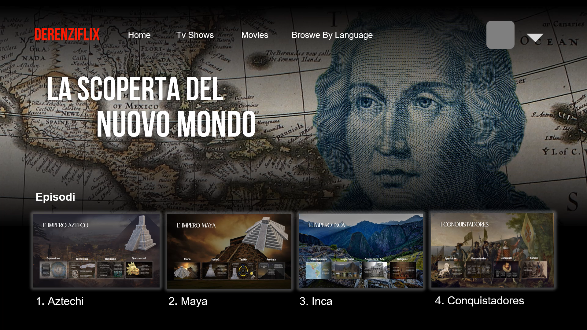
2023
DerenziFlix
DerenziFlix is a PowerPoint presentation handcrafted to tell a story through a series of slides that mimic the visual layout of Netflix. Each slide is designed to resemble a content selection screen, with cover images, descriptions, and titles that seamlessly integrate with the aesthetics of the streaming service. The project is enhanced by incorporating various 3D models and animations, making the visual experience even more dynamic and engaging.
DerenziFlix è una presentazione PowerPoint realizzata a mano, con l'obiettivo di narrare una storia attraverso una serie di diapositive che imitano il layout visivo di Netflix. Ogni diapositiva è progettata per assomigliare a una schermata di selezione dei contenuti, con immagini di copertina, descrizioni e titoli che si integrano perfettamente con l'estetica del servizio di streaming. Il progetto è arricchito dall'implementazione di vari modelli 3D e animazioni, che rendono l'esperienza visiva ancora più dinamica e coinvolgente.
Skills acquired:Conoscenze acquisite:
- User interface (UI) design
- Design dell'interfaccia utente (UI)
- Visual communication
- Comunicazione visiva
- Color theory
- Teoria del colore
- Content structuring
- Strutturazione dei contenuti
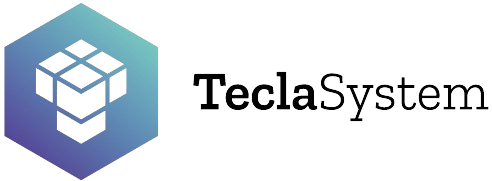
2024
TeclaSystem STT
During an internship at TeclaSystem, I had the opportunity to work on an innovative project in the field of telecommunications. For two weeks, I dedicated myself to developing software that allows extracting audio traces from .xmf containers and converting them into .wav files, then using Microsoft Azure AI's artificial intelligence for automatically transcribing the audio content. The processing process also included changing the bitrate and converting the audio traces to mono.
Durante un'esperienza di alternanza scuola-lavoro presso TeclaSystem, ho avuto l'opportunità di lavorare su un progetto innovativo nel campo delle telecomunicazioni. Per due settimane, mi sono dedicato allo sviluppo di un software che permette di estrarre tracce audio da container .xmf e di convertirle in file .wav, utilizzando poi l'intelligenza artificiale di Microsoft Azure AI per trascrivere automaticamente il contenuto audio. Il processo di elaborazione includeva anche il cambiamento del bitrate e la conversione delle tracce audio in mono.
Skills acquired:Conoscenze acquisite:
- Programming (Python)
- Programmazione (Python)
- Audio processing (FFmpeg)
- Elaborazione Audio (FFmpeg)
- Machine learning (Azure AI)
- Machine Learning (Azure AI)
- Debugging and troubleshooting
- Debugging e risoluzione dei problemi
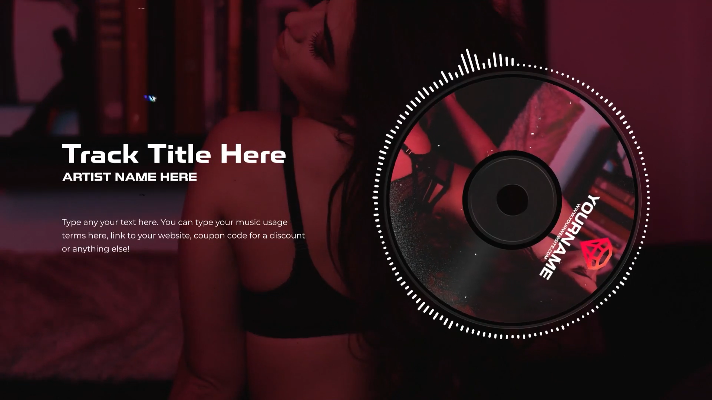
2023/2024
AE Music Template
I have developed a modular template for After Effects designed for showcasing music, complete with an audio visualizer, cover art, and small procedural movements to add dynamism to the scene. The main goal was to create a template that is easily implementable and usable by anyone, with the ability to customize the song title and creator, as well as the background with a slight blur and reduced opacity to highlight the foreground elements.
Ho sviluppato un template modulare su After Effects progettato per il showcasing di musica, completo di audio visualizer, copertina, e piccoli movimenti procedurali per aggiungere dinamismo alla scena. L'obiettivo principale era creare un template facilmente implementabile e utilizzabile da chiunque, con la possibilità di personalizzare il titolo della canzone e il creatore, nonché lo sfondo, con un leggero blur e opacità ridotta per mettere in risalto gli elementi in primo piano.
Skills acquired:Conoscenze acquisite:
- After Effects proficiency
- Competenza in After Effects
- Modular template design
- Design di template modulari
- Dynamic motion graphics
- Motion graphics dinamici
- Audio visualization techniques
- Tecniche di visualizzazione audio
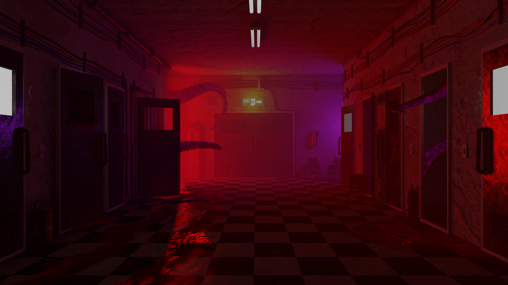
2023/2024/2025
Blender Projects
During my training journey, I devoted a significant period of time to the advanced learning and use of Blender, a leading software for creating 3D content. This project explored a wide range of techniques and tools offered by Blender, with particular attention to animation, modeling, texture management, and optimization for game engines.
Durante il mio percorso formativo, ho dedicato un significativo periodo di tempo all'apprendimento e all'uso avanzato di Blender, un software leader per la creazione di contenuti 3D. Questo progetto ha esplorato un'ampia gamma di tecniche e strumenti offerti da Blender, con un'attenzione particolare all'animazione, alla modellazione, alla gestione delle texture e all'ottimizzazione per i motori di gioco. .
Skills acquired:Conoscenze acquisite:
- Modelling and rigging
- Modellazione e rigging
- Geometry nodes and scene composition
- Geometry nodes e composizione della scena
- Procedural animations and materials
- Animazioni e materiali procedurali
- Model optimization for game engines
- Ottimizzazione di modelli per game engine
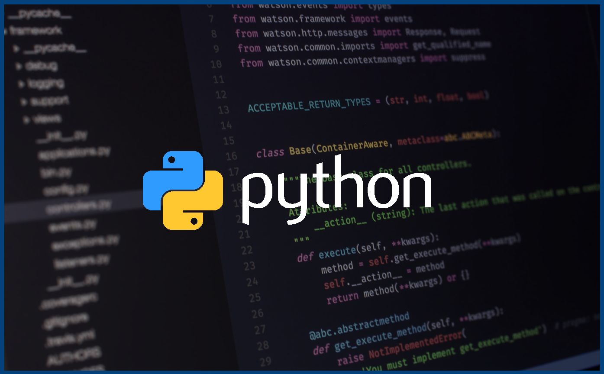
2024/2025
Python Automatization
Exploring the potential of Python to automate a wide range of daily activities, from simple ones to more complex ones, I have developed scripts that allow me to save significant time in daily operations, improving efficiency and personal organization.
Esplorando le potenzialità di Python nell'automatizzare una vasta gamma di attività quotidiane, da quelle più semplici a quelle più complesse, ho sviluppato script che mi permettono di risparmiare tempo significativo nelle operazioni giornaliere, migliorando l'efficienza e l'organizzazione personale.
Skills acquired:Conoscenze acquisite:
- Python programming
- Programmazione Python
- Automation scripting
- Scripting per automazione
- Task scheduling
- Pianificazione delle attività
- Scripting for file management
- Scripting per la gestione dei file
- Data processing
- Elaborazione dei dati
- Debugging scripts
- Debug degli script
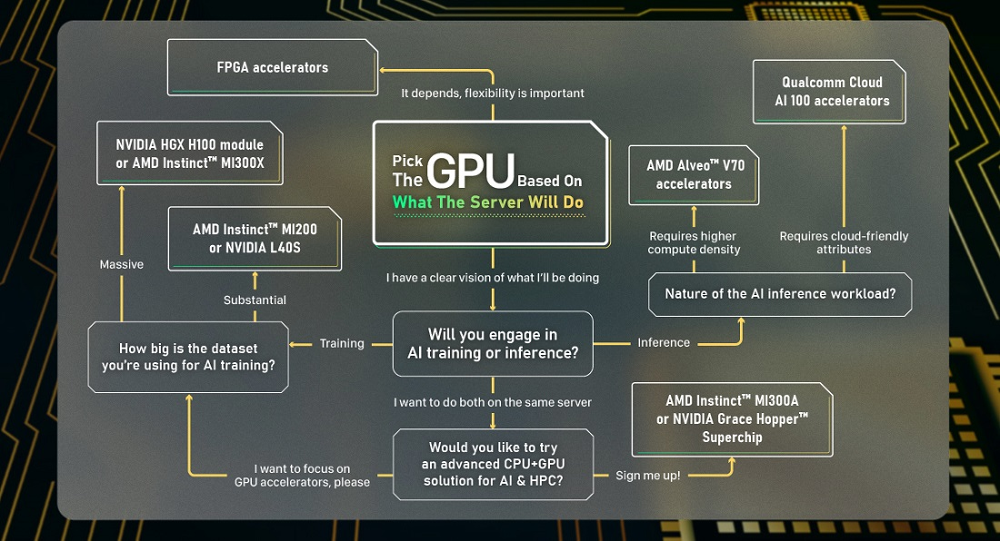
2025
Local AI Server Hosting
Local AI Server Hosting
This project concerns the local hosting of artificial intelligence (AI) services on an entirely managed infrastructure at home. The objective is to create a secure and performant environment for running AI applications, avoiding dependence on external cloud services. Using dedicated hardware and optimized configurations, the project aims to provide a fast and reliable AI experience, while also ensuring data privacy and full control over processes. This setup is ideal for independently testing, developing, and implementing AI models securely.
Questo progetto riguarda l'hosting locale di servizi di intelligenza artificiale (AI) su un'infrastruttura gestita interamente in casa. L'obiettivo è creare un ambiente sicuro e performante per eseguire applicazioni AI, evitando la dipendenza da servizi cloud esterni. Utilizzando hardware dedicato e configurazioni ottimizzate, il progetto mira a fornire un'esperienza AI rapida e affidabile, garantendo al contempo la privacy dei dati e il controllo completo sui processi. Questo setup è ideale per testare, sviluppare e implementare modelli AI in modo autonomo e sicuro.
Skills acquired:Conoscenze acquisite:
- Configuration and management of local AI servers
- Configurazione e gestione di server AI locali
- High-performance hardware management (GPU)
- Gestione di hardware ad alte prestazioni (GPU)
- AI applications setup and testing
- Setup e testing di applicazioni AI
- Backup and recovery of data and AI models
- Backup e ripristino di dati e modelli AI